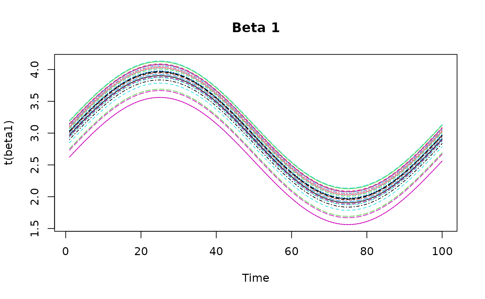
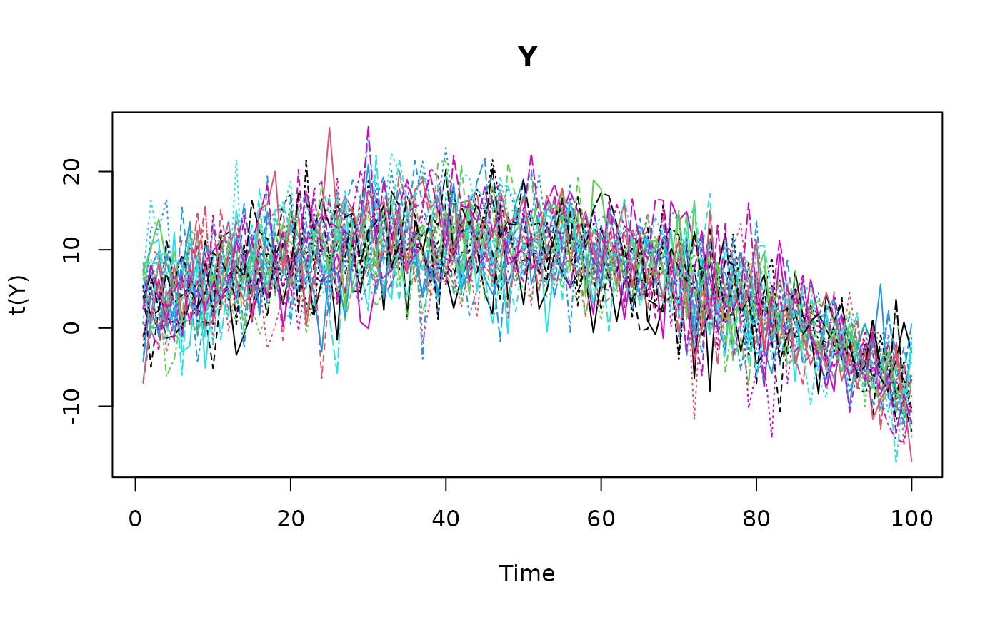
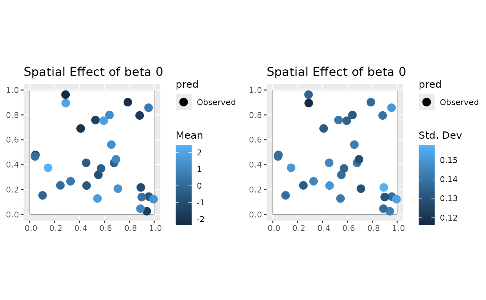
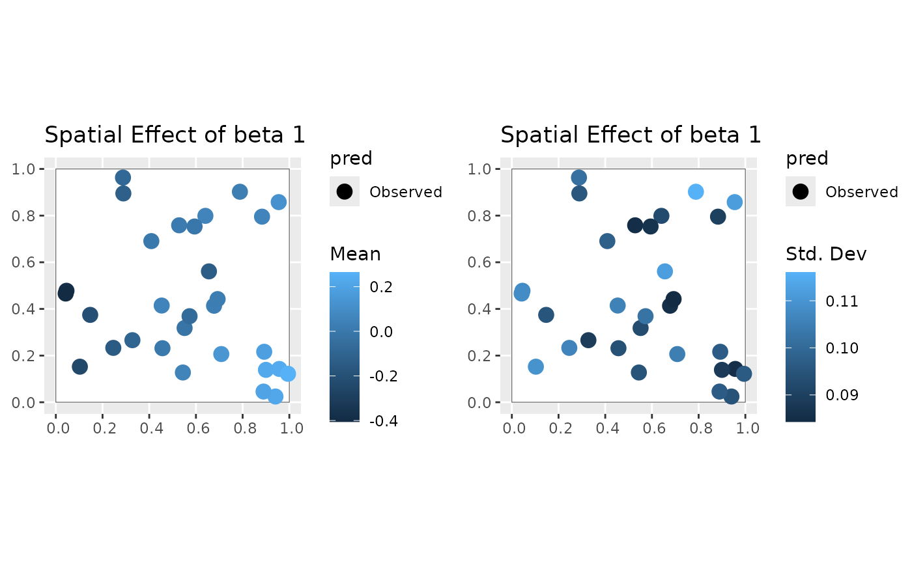
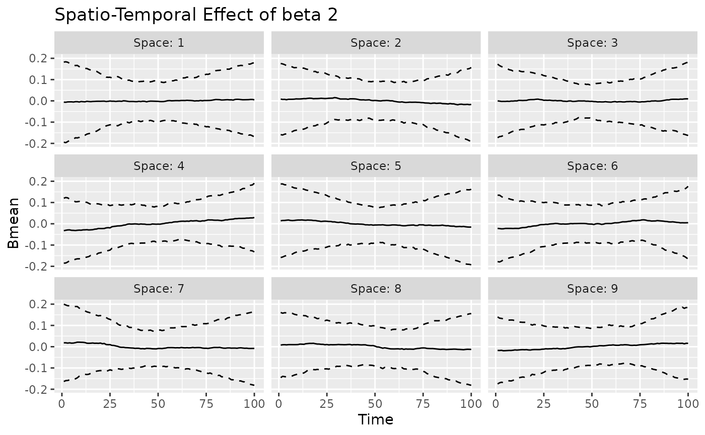
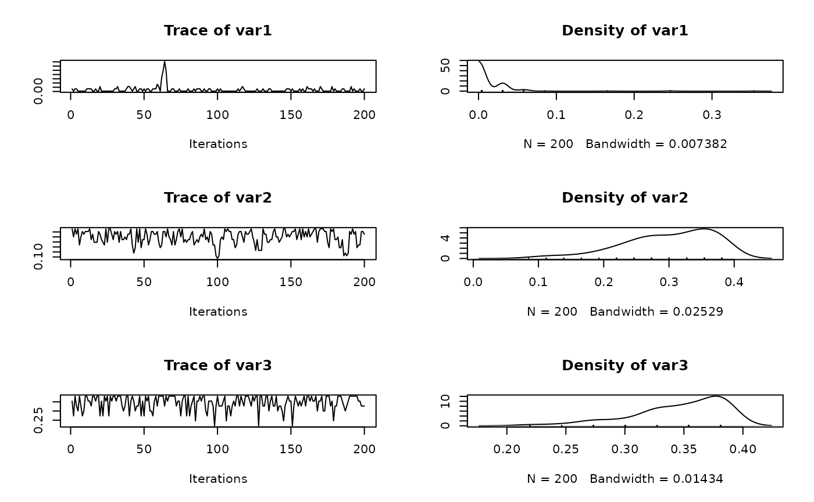
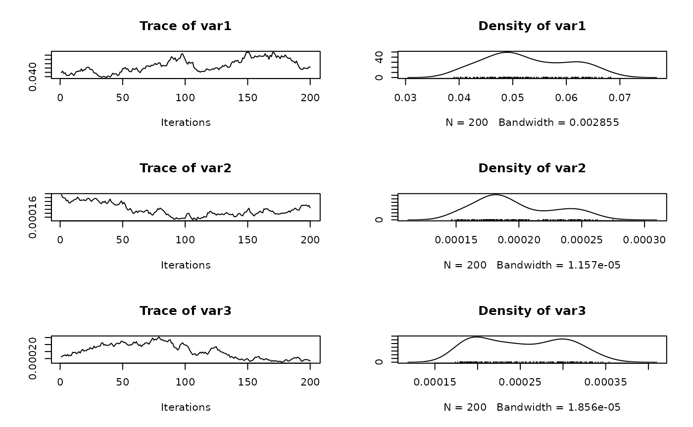
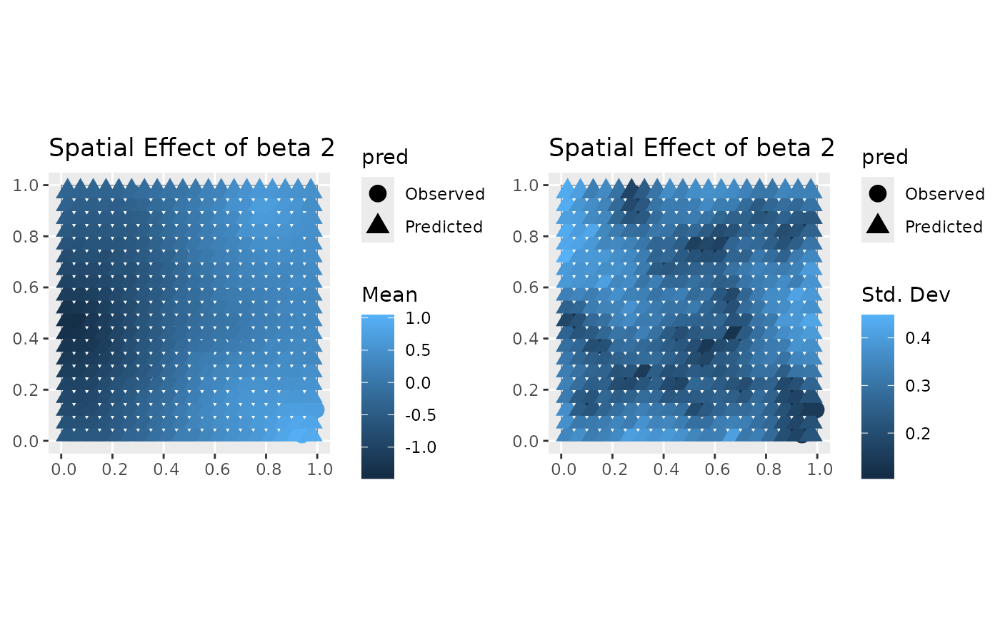
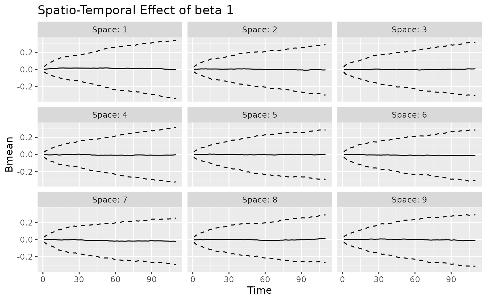
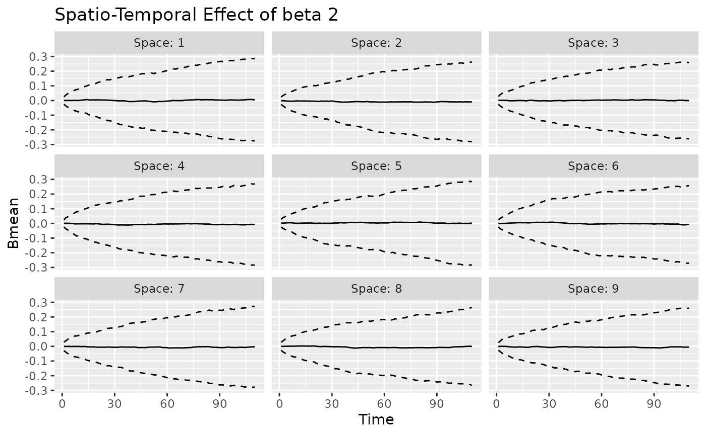

This article demonstrates how to fit a spatio-temporal dynamic
generalized linear model (STDGLM) to simulated data using the
STDGLM package. First, we load the required packages.
packages <- c("dplyr", "ggplot2", "tidyr", "ggpubr", "coda", "sf")
for (package in packages) {
if (!require(package, character.only = TRUE)) {
install.packages(package)
require(package, character.only = TRUE)
}
}
#> Loading required package: dplyr
#>
#> Attaching package: 'dplyr'
#> The following objects are masked from 'package:stats':
#>
#> filter, lag
#> The following objects are masked from 'package:base':
#>
#> intersect, setdiff, setequal, union
#> Loading required package: ggplot2
#> Loading required package: tidyr
#> Loading required package: ggpubr
#> Loading required package: coda
#> Loading required package: sf
#> Linking to GEOS 3.12.1, GDAL 3.8.4, PROJ 9.4.0; sf_use_s2() is TRUEData Generation
The following chunk generates some covariates. We randomly sample
spatial locations within the unit square. At these locations, we
generate
covariates (X) whose effects vary in spacetime, the first
one being an intercept, and
covariate (z) whose effect is held constant.
p = 30
set.seed(123)
coords = data.frame(x = runif(p), y = runif(p))
D = as.matrix(dist(coords))
t = 100
J = 3
X = array(1, dim = c(p, t, J))
for (j in 2:J) {
for (t_ in 1:t) {
set.seed(j*t_)
X[, t_, j] = rnorm(p)
}
}
q=1
set.seed(10)
z = array(rnorm(p*t*q), dim = c(p, t, q))Then we simulate some varying coefficients and plot them.
beta0 <- outer(
seq(0.7, 1.5, length.out = p),
-10*(seq(0,1,length.out = t)-0.5) - 50*(seq(0,1,length.out = t)-0.5)^2 + 10
)
tempo <- (1:t)
beta1 <- outer(
- .6* (coords$x-.9)^2 + .6* (coords$y-.5)^2,
sin(tempo/t*2*pi) + 3, FUN = "+"
)
beta2 = 4*outer(
- .6* (coords$x-.9)^2 + 1* (coords$y-.5)^2,
0.5*sin(tempo/t*2*pi) + 0.5*cos(tempo/t*4*pi),
FUN = "+"
)


Next, we simulate the response variable Y using the
observation equation. The observation error is assumed to be normally
distributed with mean zero and variance
.
gamma <- 1
set.seed(42)
eps = matrix(rnorm(p*t, sd = sqrt(2)), nrow = p, ncol = t)
Y <- beta0 + beta1*X[,,2] + beta2*X[,,3] + gamma*z[,,1] + eps
Model Fitting
Before fitting the model, we need to prepare a list of prior
hyperparameters. Here, we assume vague priors for all the parameters.
These are also the default values used when prior=NULL in
the stdglm function.
prior_list = list(
V_beta_0 = 1e4, # Prior variance of initial state
V_gamma = 1e6, # Prior variance of constant coefficients
a1 = 0.01, # Prior shape for temporal variance
b1 = 0.01, # Prior rate for temporal variance
s2_a = 0.01, # Prior shape for measurement error variance
s2_b = 0.01 # Prior rate for measurement error variance
)The MCMC setup is provided in the next chunk. You can adjust the
number of iterations, burn-in period, thinning interval, and other
parameters as needed. The point.referenced argument
indicates that the data are point-referenced, and
random.walk specifies that we want to use a random walk
structure for time-varying parameters.
nburn <- 200 # burn-in period
nrep <- 200 # number of iterations to save after burn-in
thin <- 1 # thinning interval
point.referenced = TRUE # data are point-referenced
random.walk = TRUE # random walk structure for time-varying parameters
print.interval = 50 # print message during execution of MCMCThe following command executes the MCMC algorithm to fit the STDGLM
model to the simulated data. The stdglm function takes the
response variable Y, covariates X and
z, and other parameters defined above. The output is an
object of class stdglm, i.e. a list containing the MCMC
samples and other posterior summaries. The output is described in a
separate article.
mod <- stdglm(y=Y, X=X, Z=z,
point.referenced=point.referenced,
random.walk=random.walk,
W=D,
nrep=nrep, nburn=nburn, thin=thin,
print.interval=print.interval,
prior=prior_list
)
#> Starting MCMC (400 iterations)...
#> Iteration: 50 / 400
#> Iteration: 100 / 400
#> Iteration: 150 / 400
#> Iteration: 200 / 400
#> Iteration: 250 / 400
#> Iteration: 300 / 400
#> Iteration: 350 / 400
#> Iteration: 400 / 400
#> MCMC finished.
fitted, coef and plot
methods
The fitted method provides the mean of the posterior
predictive distribution for the observed data points. We can also
plot the fitted values against the observed data for a
specific location.
fitted_values <- fitted(mod)
print(dim(fitted_values))
#> [1] 30 100
summary(t(fitted_values[1:5,]))
#> V1 V2 V3 V4
#> Min. :-7.5898 Min. :-9.180 Min. :-9.114 Min. :-12.4280
#> 1st Qu.: 0.3714 1st Qu.: 1.604 1st Qu.: 2.415 1st Qu.: 0.6149
#> Median : 4.1684 Median : 5.532 Median : 5.243 Median : 6.1201
#> Mean : 3.9380 Mean : 4.895 Mean : 4.742 Mean : 5.0622
#> 3rd Qu.: 6.6549 3rd Qu.: 8.559 3rd Qu.: 7.697 3rd Qu.: 8.8485
#> Max. :16.4509 Max. :14.601 Max. :14.387 Max. : 16.1828
#> V5
#> Min. :-11.600
#> 1st Qu.: 1.852
#> Median : 4.973
#> Mean : 4.784
#> 3rd Qu.: 8.279
#> Max. : 19.706
plot(mod, Y=Y, id=1) # pick a number between 1 and p
The plot method returns an object from the
ggplot2 package, so it is straightforward to customize,
save, and arrange multiple plots.
g1 = plot(mod, Y=Y, id=1)
# ggsave("plot1.png", plot = g1)
g2 = plot(mod, Y=Y, id=2)
# ggsave("plot2.png", plot = g2)
ggarrange(g1, g2, labels = c("#ID 1", "#ID 2"), label.x = 0.8)
Posterior summaries for all the coefficients can be extracted using
the coef method. Here we show those of constant
coefficients.
print(coef(mod, 'overall'))
#> Mean ci_low ci_high
#> 1 6.3137500 6.258705 6.3687949
#> 2 2.8937386 2.840712 2.9467654
#> 3 -0.1233977 -0.178009 -0.0687864
print(coef(mod, 'gamma'))
#> Mean ci_low ci_high
#> 1 0.8405103 0.7861577 0.894863The plot method can also be used to visualize the
time-varying, space-varying, and spacetime-varying coefficients. The
returned object is a ggplot object. The label “Observed”
indicates that the values refer to the observed spatio-temporal data
points. For time-varying and spacetime-varying coefficients, the 95%
credible intervals (CI) are within the dashed lines, whereas for the
space-varying coefficients the posterior standard deviation is shown for
each location.
plot(mod, 'tvc')
#> [[1]]
#>
#> [[2]]
#>
#> [[3]]
coords_sf = st_as_sf(coords, coords = c("x", "y"))
unit_square_coords <- matrix(
c(
0, 0,
1, 0,
1, 1,
0, 1,
0, 0
),
ncol = 2,
byrow = TRUE
)
region = st_sf(
geometry = st_sfc(st_polygon(list(unit_square_coords)))
)
plot(mod, 'svc', coords_sf, region)
#> [[1]]
#>
#> [[2]]
#>
#> [[3]]

#>
#> [[2]]
#>
#> [[3]]
The coef method can be used also for the varying
coefficients. For example, we can compare the posterior mean of the
spacetime-varying effect of beta0 with its true value.
st_effect_b0 = beta0 + mean(beta0) -
matrix(rowMeans(beta0), nrow = nrow(beta0), ncol = ncol(beta0)) -
matrix(colMeans(beta0), nrow = nrow(beta0), ncol = ncol(beta0), byrow = TRUE)
beta0_post = coef(mod, 'stvc') %>%
filter(Coef == 'beta0') %>%
mutate(Truth = as.vector(st_effect_b0)) %>%
filter(Space %in% 1:9) %>%
select(Space:Mean, Truth) %>%
pivot_longer(cols = c('Mean', 'Truth'), names_to = 'Type', values_to = 'Value')
ggplot(beta0_post, aes(x = Time, y = Value, color = Type)) +
geom_line() +
facet_wrap(~ Space, nrow = 3) +
labs(title = "Posterior Mean vs Truth for beta0")
Trace plots
We can also visualize the trace plots of the MCMC samples for the
parameters of interest. For that purpose, we can convert the output to
an mcmc object, then use the plot function
from the coda package.





if (!random.walk) {
plot(mcmc(t(mod$out$phi_AR1_time))) # AR(1) coefficient for temporal evolution for j=1,...,J
plot(mcmc(t(mod$out$phi_AR1_spacetime))) # AR(1) coefficient for spatio-temporal evolution for j=1,...,J
}
plot(mcmc(t(mod$out$gamma))) # coefficient of the z covariate
Restoring previous state
The MCMC algorithm has not converged yet, however it is very easy to
continue previous chain. You just need to provide mod as an
argument to the stdglm function. The MCMC will continue
from the last saved state. Note that all previous samples will be
discarded.
mod <- stdglm(y=Y, X=X, Z=z,
point.referenced=point.referenced,
random.walk=random.walk,
W=D,
nrep=nrep, nburn=nburn, thin=thin,
print.interval=print.interval,
prior=prior_list,
last_run = mod
)Model Selection and Comparison
The stdglm object also contains tools for model
selection and comparison, including the Deviance Information Criterion
(DIC), the Widely Applicable Information Criterion (WAIC), scoring rules
and Bayesian p-values. These are all described in a
separate article.
Temporal predictions and Spatial interpolation
In this section, we will demonstrate how to perform out-of-sample
predictions. We will create a grid of new spatial locations and generate
new covariates for these locations. We also assume that we want to
predict the next 10 time points, so we set h_ahead = 10.
The new covariates are generated in a similar way as before, but now we
have p_new locations and t_new = t + h_ahead
time points.
st_new = st_make_grid(region, what = "centers", n = c(20, 20))
p_new = NROW(st_new)
h_ahead = 10
t_new = t + h_ahead
coords_pred = as.data.frame(st_coordinates(st_new))
names(coords_pred) = names(coords)
Xpred = array(1, dim = c(p_new, t_new, J))
for (j in 2:J) {
for (t_ in 1:t_new) {
set.seed(j*t_*2)
Xpred[, t_, j] = rnorm(p_new)
}
}
q=1
set.seed(10*8)
zpred = array(rnorm(p_new * t_new * q), dim = c(p_new, t_new, q))The function stdglm performs spatial interpolation using
a blocked structure. This is useful when the number of new spatial
locations is very large. Therefore, three lists are created to store the
indices of new locations (blocks_indices), the distance
matrices for the prediction locations (D_pred), and the
cross-distance matrices (D_cross). In the following code
chunk, each block is made up of just one location.
ii = floor(seq(1, p_new+1, by = 1))
lii = length(ii)
D_pred = D_cross = blocks_indices = vector('list', lii-1)
for (i in 2:lii) {
Dalltemp = as.matrix(dist(rbind(coords, coords_pred[ii[i-1]:(ii[i]-1), ])))
D_pred[[i-1]] = unname(Dalltemp[-(1:p), -(1:p), drop=FALSE])
D_cross[[i-1]] = unname(Dalltemp[1:p, -(1:p), drop=FALSE])
blocks_indices[[i-1]] = ii[i-1]:(ii[i]-1)
}The following command fits the STDGLM model, continuing the previous
run. There is also the possibility to set the number of cores for
parallel processing using the ncores argument: if its value
is greater than 1, the spatial predictions will be performed in parallel
during each MCMC iteration.
mod <- stdglm(y=Y, X=X, Z=z,
point.referenced=point.referenced,
random.walk=random.walk,
blocks_indices=blocks_indices,
W=D, W_pred=D_pred, W_cross=D_cross,
X_pred=Xpred, Z_pred=zpred,
ncores = 1, # Set number of cores for parallel processing
nrep=nrep, nburn=nburn, thin=thin,
print.interval=print.interval,
prior=prior_list,
last_run = mod
)
#> Restarting MCMC from previous state...
#> Starting MCMC (400 iterations)...
#> Iteration: 50 / 400
#> Iteration: 100 / 400
#> Iteration: 150 / 400
#> Iteration: 200 / 400
#> Iteration: 250 / 400
#> Iteration: 300 / 400
#> Iteration: 350 / 400
#> Iteration: 400 / 400
#> MCMC finished.The plot method can be used again to visualize the
posterior predictive summaries (posterior mean and 95% CIs) of the
varying coefficients. The observed spatio-temporal points are clearly
distinguished from the predicted ones.
plot(mod, 'tvc')
#> [[1]]
#>
#> [[2]]
#>
#> [[3]]
coords_pred_sf = st_as_sf(coords_pred, coords = c("x", "y"))
plot(mod, 'svc', coords_sf, region, coords_pred_sf)
#> [[1]]
#>
#> [[2]]
#>
#> [[3]]

#>
#> [[2]]
#>
#> [[3]]